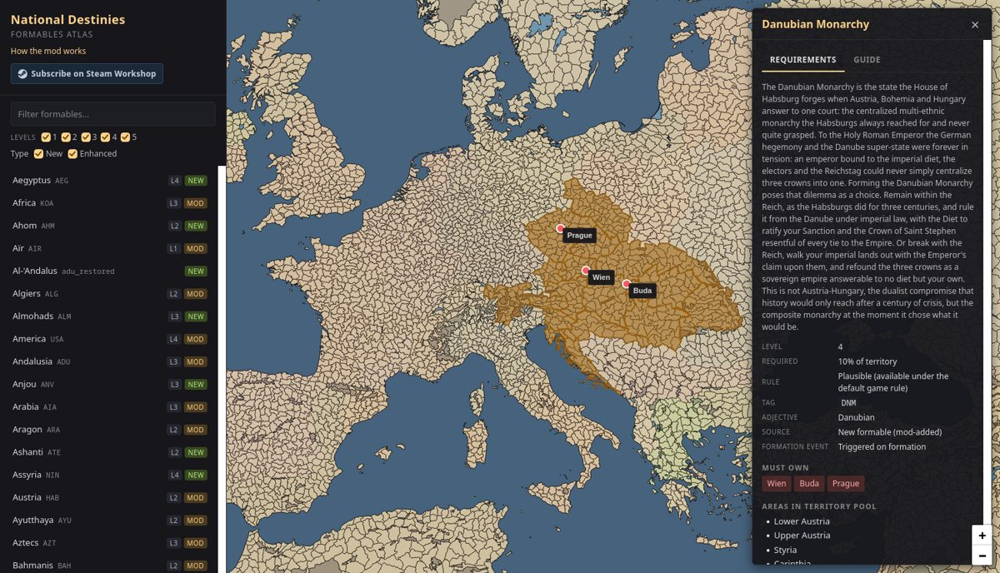

Features
National Destinies gives formable countries in Europa Universalis V content of their own. This page explains each part of it.

Formables Atlas
Every formable country on the map, with what it takes to form it and a guide to its content.
Formation events

Forming a country opens an event about that moment in its history. It offers two or three choices, and each grants a different bonus that lasts for a set number of years. In most countries the choice also decides which destiny path you follow.
Advance trees

Each country has advances of its own in the ages of the advance tree. They give permanent bonuses and come from what the nation was known for, such as its armies, its trade or its government. Some unlock a unit, a building or a levy.
Where the base game already gives a country advances, they stay as they are and the mod adds the ones that were missing.
Destiny trees

A destiny tree is a set of missions that opens after you form a country.
- The choice in the formation event opens one of two paths. Byzantium has three. A few countries, France among them, open their paths by what they do in the game.
- A path has three stages. A stage asks for things such as owning a named place, developing a named city, holding a building, gold, prestige or an army of a given size.
- Each stage gives a permanent bonus. Most paths end in a building that only that path unlocks.
- You keep a destiny tree when you go on to form another country, and you gain the new country's tree as well.
Where to find it. Open the advance tree and look in the Age of Traditions, the first age. The destiny advances form a group of their own among the other advances. The Danubian Monarchy is the exception, with stages from the second age to the sixth.

The game rule National Destinies Destiny Trees turns them off.
Bureaucracies

Each country gains 4 to 8 historical institutions when it forms, such as a royal mint, an examination board or a customs house. Each is a bureaucracy you can install, with a funding level that scales its effects and its drawbacks.
The mod also adds three doctrines and a law.
- Three doctrines, as government reforms. Patrimonial, Oligarchic and Meritocratic Doctrine exclude one another.
- The Bureaucratic Funding law, with four policies. Tax Farming, Crown Coffers, Estate Subvention and Treasury Bureau decide what installing and changing institutions costs. Treasury Bureau opens in the fifth age.
Byzantium and Trebizond get neither the doctrines nor the law, because the base game already gives them bureaucracy content of their own.

The game rule National Destinies Bureaucracies turns all of this off.
Units, buildings and levies

The mod adds unique units, buildings and levies where a country's history has them. A country's advances unlock them, and so do some destiny paths.
New formables
More than 50 countries in the mod do not exist in the base game, such as Songhai, the Kilwa Sultanate, Great Tang and the Empire of Brazil. Each has the same content as any other formable. In the Atlas, tick only New under Type to list them.
To propose one, open a discussion on the Workshop page. Countries that existed, or plausibly could have within the game's dates, are added. Modern and fantasy countries are not.
The Danubian Monarchy

Austria, Hungary or Bohemia can form the Danubian Monarchy, the Habsburg empire of all three crowns. It is the mod's largest country, with 90 events, two situations and two disasters.
- The Succession of the Danube is a situation among the three crowns. Marriages, inheritance pacts and a congress decide which of them unites the others.
- The Reaction of the Reich starts if you leave the Holy Roman Empire. The Emperor gains a casus belli against you and other countries shun you. It ends when you beat the Emperor in a war, when he accepts a reconciliation, when the War of the Succession is over, or after 50 years with 60 legitimacy and 50 prestige.
- The Nationalities Question and the War of the Succession are disasters the Monarchy can suffer after it is founded.
The Danubian Monarchy guide has the steps. Three game rules turn the succession, the reaction and the disasters off one by one.


Brazil

Portugal can move its court to Rio de Janeiro, as it did in 1807, and go on to become Brazil.
- The decision Send the Court to Rio makes Rio your capital and starts the Transmigration, a disaster with a panel of its own that runs the move. You have 50 years.
- A fleet sails every year. You choose what it carries, such as nobles and the court, clergy, merchants, settlers or supplies.
- You move the eight royal offices to Rio one at a time. Each one changes what you gain in Rio and who it upsets in Lisbon.
- A regency governs Portugal while the court is away, and you have to keep control there.
- With the Royal Council, the Supreme Court and the Royal Treasury in Rio, a quarter of your nobles and 15% of your clergy in the Americas, you can stay in Rio for good. After that the court cannot go back.
- The move ends with a return to Lisbon, with two crowns, or with Portugal let go. After either of the last two you can form Brazil.
The decision is in beta. Start from the Portugal page or read the Brazil guide.
AI forms nations
The game rule AI Forms Nations has three settings. It is off by default.


- Off. The base game's AI. It forms the nations it happens to qualify for and works toward none.
- Opportunistic. An AI country that meets the requirements of a major formable forms it. The nine are Spain, Russia, Great Britain, Scandinavia, the Mughals, the Danubian Monarchy, Germany, Italy and the Netherlands. How the AI fights its wars does not change.
- Ambitious. Every AI country works toward one formable, the one it formed in history or else the smallest it can reach. It wants that land, favours wars on the countries that hold it, forms the nation once it qualifies and then aims one step higher. The world is harder and changes more.
Banks
The banks of the base game, such as the Peruzzi, the Bardi and the Acciaioli, get mechanics of their own. This part of the mod is in beta.
- The Money Market shows a bank its debtors, its offices and its rival banks in one panel, with a map of who owes it.
- A bank lends, takes pledges for its loans and sells war bonds.
- Each bank has trust and greed. When trust fails, the bank faces a run.
- A bank can also hold land. It can pay for a war and take a town in the peace, seize a pledged place and take a country under its protection.

The game rule National Destinies Banks has three settings. Full is all of the above, Money Only leaves out everything about land, and Disabled keeps banks as they are in the base game.
Compatibility
- The mod is made for EU5 1.4. Across the Pillars is supported and not required.
- Start a new game to get everything. Added to a running save, the mod gives its advances, units and buildings, but a country already formed misses its formation event.
- A mod that changes the definitions of formable countries may conflict.
- If Steam keeps loading an old version, unsubscribe, clear the download cache in Steam's settings and subscribe again.
Translations
Bugs
Report bugs and balance problems in the comments on the Workshop page. Say which country you play and what you expected to happen.